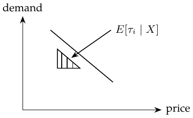

Chapter 20. Plug-and-play estimators
Previously, comparable treatment and control groups gave ATE: random assignment uses \((Y(0),Y(1))\perp T\), and adjusted observational comparisons use \((Y(0),Y(1))\perp T\mid X\) with overlap. Now I ask: for whom does treatment work better; who is more sensitive? \[\tau_i=Y_i(1)-Y_i(0),\qquad Y_i^{\mathrm{obs}}=\begin{cases}Y_i(1),&T_i=1,\\Y_i(0),&T_i=0.\end{cases}\] \[\mathrm{ATE}=\tau=E[\tau_i],\qquad \mathrm{CATE}=\tau(x)=E[\tau_i\mid X=x].\] With \(y_i=\beta_0+\beta_1t_i+\beta_2X_i+\beta_3t_iX_i+e_i\), the fitted effect is \(\hat\tau(x)=\hat\beta_1+\hat\beta_3x\). The main-effect coefficient \(\beta_2\) drops out of this contrast. I initially connected an irrelevant \(X\) to biased effect estimates; in correctly specified unregularized OLS, an irrelevant covariate instead need not create bias and may only reduce precision.
Outcome MSE is \(E[(Y_i-\hat Y_i)^2]\). My target is instead treatment-effect prediction: \[\min_f E[(\tau(X)-f(X))^2].\]
Supplementary explanation.
Writing \(\Delta=Y(1)-Y(0)\), the individual-effect risk differs by a term independent of \(f\): \[E[(\Delta-f(X))^2]=E[(\tau(X)-f(X))^2]+E[\operatorname{Var}(\Delta\mid X)].\] Thus the risks have the same minimizer, but are not generally equal.
Transformed outcomes for binary treatment.
Introduce \(Y_i^*=2Y_iT_i-2Y_i(1-T_i)\). Under 50/50 random assignment, \(T\perp(Y(0),Y(1))\), so \(E[TY(t)]=E[T]E[Y(t)]\). Also, \(Y_iT_i=Y_i(1)T_i\) and \(Y_i(1-T_i)=Y_i(0)(1-T_i)\). Therefore \[\begin{aligned} E[Y_i^*\mid X_i=x] &=2E[Y_i(1)T_i\mid X_i=x]-2E[Y_i(0)(1-T_i)\mid X_i=x]\\ &=2E[Y_i(1)\mid X_i=x]\,0.5-2E[Y_i(0)\mid X_i=x]\,0.5\\ &=\tau(x). \end{aligned}\] For nonrandom assignment, introduce propensity \(e(X_i)\), with conditional exchangeability and overlap, and use \[Y_i^*=Y_i\frac{T_i-e(X_i)}{e(X_i)(1-e(X_i))}.\] When treatment is randomized at a known probability \(p\), substitute \(p\) for \(e(X_i)\). The key conditional-expectation calculation is \[\begin{aligned} E[Y_i^*\mid X_i=x] ={}&\frac{E[Y_i(1)\mid X_i=x]E[T_i\mid X_i=x]}{e(x)}\\ &-\frac{E[Y_i(0)\mid X_i=x]E[1-T_i\mid X_i=x]}{1-e(x)}=\tau(x). \end{aligned}\] My reading of the cumulative gain curve is that this transformed target is very noisy. Its guarantee is \(E[Y^*\mid X]=\tau(X)\), so it targets CATE after averaging within \(X\). Under randomized assignment, it is also design-unbiased for a fixed individual’s effect conditional on that individual’s potential outcomes. More data can average out noise when the weights have suitable moments; it cannot repair missing overlap.
Continuous treatment.
The target is \(\tau(x)=E[\partial Y_i(t)/\partial t\mid X=x]=E[\tau_i\mid X=x]\). The sketch shows a downward demand-versus-price slope.

Within an \(X=x\) stratum, the conditional projection slope and its sample counterpart are \[\hat\tau(x)\approx\frac{\operatorname{Cov}(Y_i,T_i\mid X=x)}{\operatorname{Var}(T_i\mid X=x)} =\frac{\sum_i(Y_i-\bar Y)(T_i-\bar T)}{\sum_i(T_i-\bar T)^2}.\] Suppose the conditional mean is linear in treatment, \(E[Y\mid T,X=x]=a(x)+\tau(x)T\). Under the same randomized treatment distribution at every \(x\), write \(\mu_T=E[T]\), \(\mu_Y=E[Y]\) and \(\sigma_T^2=\operatorname{Var}(T)>0\). For one observation define \[Y_i^*=(Y_i-\mu_Y)\frac{T_i-\mu_T}{\sigma_T^2}.\] Set \(V_i=(T_i-\mu_T)/\sigma_T^2\). The derivation uses \(E[V_i\mid X_i=x]=0\), \(E[T_iV_i\mid X_i=x]=1\), and \[E[T_i(T_i-\mu_T)\mid X_i=x]=E[(T_i-\mu_T)^2\mid X_i=x],\] as well as \(E[T_ie_i\mid X_i=x]=E[T_i\mid X_i=x]E[e_i\mid X_i=x]\). With \(Y_i=\alpha+\beta T_i+e_i\) at \(X_i=x\), \[\begin{aligned} E[Y_i^*\mid X_i=x] &=E[(Y_i-\mu_Y)V_i\mid X_i=x]\\ &=E[(\alpha+\beta T_i+e_i-\mu_Y)V_i\mid X_i=x]=\beta=\tau(x). \end{aligned}\] My attempted extension replaces the treatment mean by a model \(m(X_i)\): \[Y_i^{*,\mathrm{try}}=(Y_i-\mu_Y)\frac{T_i-\hat m(X_i)}{\{T_i-\hat m(X_i)\}^2}.\] The variance is difficult to estimate. If I only need a relative ranking, can I avoid estimating it?
Supplementary explanation.
The squared residual of one observation is not conditional treatment variance. Under the conditional linear model above, a valid moment target is \[\frac{\{Y_i-\ell(X_i)\}\{T_i-m(X_i)\}}{v(X_i)},\quad \ell(x)=E[Y\mid X=x],\quad v(x)=\operatorname{Var}(T\mid X=x)>0.\] Its conditional mean is \(\tau(x)\). Omitting \(v(x)\) instead ranks \(v(x)\tau(x)\), so it preserves the effect ranking only with additional restrictions, for example constant positive \(v(x)\). The attempted individual-residual denominator can also explode near zero. Chapter 22 gives the related weighted R-loss formulation.
Nonlinear relationships: no solution yet. Maybe use \(D_i=1/P_i^\alpha\), hence \(\log D_i=-\alpha\log P_i\). This is a possible transformation to explore, not a completed general solution.